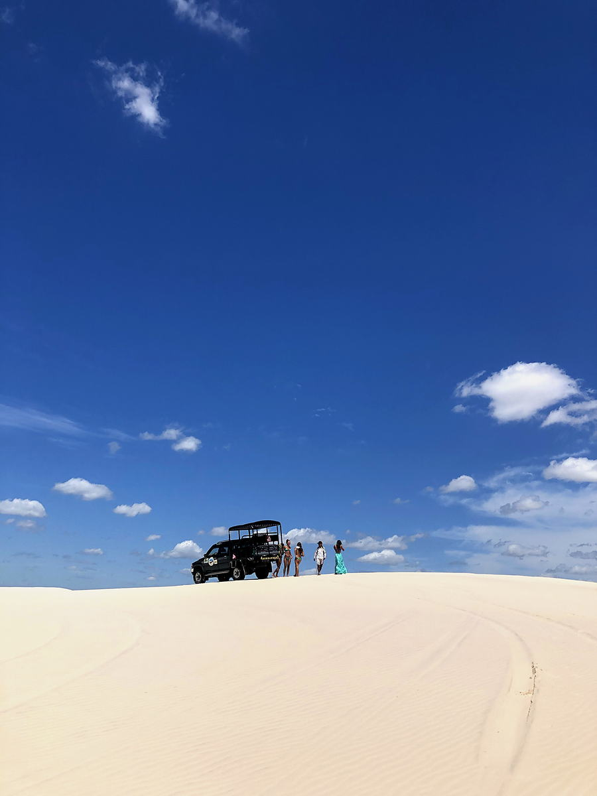
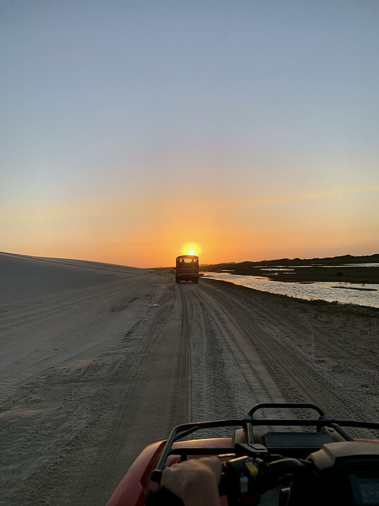
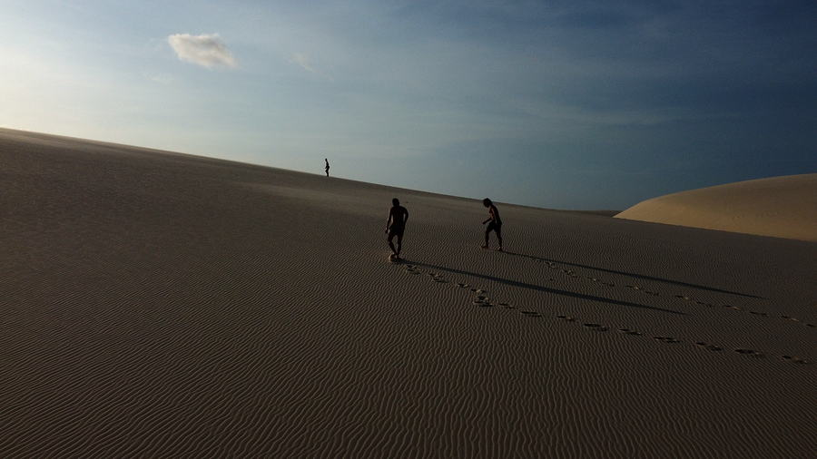

Lençóis Maranhenses
Milhares de lagoas de água doce num deserto de dunas brancas. Aqui está como se chega, quanto tempo leva, e o que a gente tira das suas mãos.
A chuva cai nos Lençóis na primeira metade do ano e se acumula entre as dunas, transformando mais de 1.500 quilômetros quadrados de areia branca em milhares de lagoas transparentes. Não existe estrada dentro do parque nem placa nenhuma. Tudo depende do veículo, do motorista e do horário em que você vai.
É por isso que duas pessoas podem passar os mesmos três dias ali e voltar com viagens completamente diferentes. O passeio padrão sai da mesma cidade, no mesmo horário, para as mesmas lagoas de todo mundo. É bonito, e é uma fração do que existe ali.
A gente planeja a outra versão: o caminho, os horários, as travessias e as pessoas que te levam, montados a partir dos dias que você tem e do que você realmente quer ver.
Quatro dias, seis dias, oito dias
A resposta honesta para a pergunta que todo mundo faz primeiro. Menos dias não é pior, só muda o que é possível.
Quatro dias
As dunas e as lagoas perto de uma base, mais um dia no rio Preguiças. Você vai ver direito e vai embora querendo mais. É a versão que a maioria faz.
Seis dias
Dá para atravessar entre Barreirinhas e Atins com calma em vez de correndo, guardar um dia sem nada marcado e chegar numa lagoa que exige estrada de verdade.
Oito dias ou mais
Aí cabem as coisas boas: uma noite dormindo no meio das dunas, um dia de kite se o vento entrar, e as tardes em que nada está marcado e algo acontece mesmo assim.
Se você só tem três dias e já está no Brasil, fala com a gente do mesmo jeito. Às vezes a resposta certa é outro destino este ano e os Lençóis no próximo, e a gente vai dizer isso.
As lagoas não estão lá o ano inteiro
A chuva enche as lagoas na primeira metade do ano. Elas ficam mais cheias por volta do meio do ano e vão diminuindo depois. Fora dessa janela a paisagem continua extraordinária, só que é um deserto em vez de um deserto cheio de água.
Terracota é o trecho mais cheio, areia é o intermediário, apagado é quando as lagoas estão baixas ou secas. Isso muda todo ano com a chuva, então escreve para a gente antes de comprar a passagem que a gente te diz o que este ano está fazendo.
Como o trajeto funciona de verdade
A parte que trava a maioria das pessoas. É longo, mas não é complicado depois que alguém já fez o caminho antes.
Voar para São Luís
A capital do estado, com voo de São Paulo, Brasília, Fortaleza, Recife e Belém. De lá é um dia de estrada até a borda do parque.
Ou chegar por Fortaleza
Melhor se você já está no litoral do nordeste ou está descendo a Rota dos Ventos vindo de Jericoacoara. É uma estrada mais longa, e mais interessante.
E aí deixa de ser estrada
Barco pelo rio Preguiças, ou 4x4 pela areia. Os dois precisam de alguém que saiba ler a maré e a trilha. Essa parte a gente assume por inteiro.



Tudo no chão, antes de você pousar
A lagoa às sete da manhã
A maioria dos grupos chega nas dunas no fim da tarde, junto, nas mesmas três lagoas. É bonito e é cheio, e é o que acontece quando todo mundo compra o mesmo passeio na mesma rua.
A outra versão começa antes de a luz subir, com um motorista que não se importa com o horário, numa água sem mais ninguém dentro. Ou termina depois que o último carro foi embora, comendo nas dunas enquanto o sol cai, voltando sob a lua.
Nenhuma das duas é produto que se reserva online. As duas são só uma questão de conhecer o lugar o bastante para planejar em volta de todo mundo.



Diz suas datas que a gente te diz a verdade
Se as lagoas vão estar cheias, quantos dias você precisa de verdade, e quanto custa. Antes de você reservar qualquer coisa.
yasminnbistricky@gmail.com